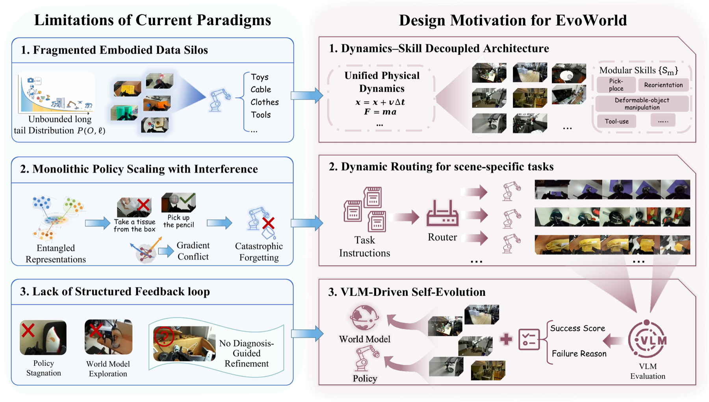

WORLD MODELS & EMBODIED AIECCV 2026 · POSTER / FMEA @ CVPR 2026
EvoWorld: A World-Model-Centric Framework for Continuous Self-Evolution of Modular Embodied Skills
Modular embodied skills that improve through world-model imagination, policy routing, and targeted updates.